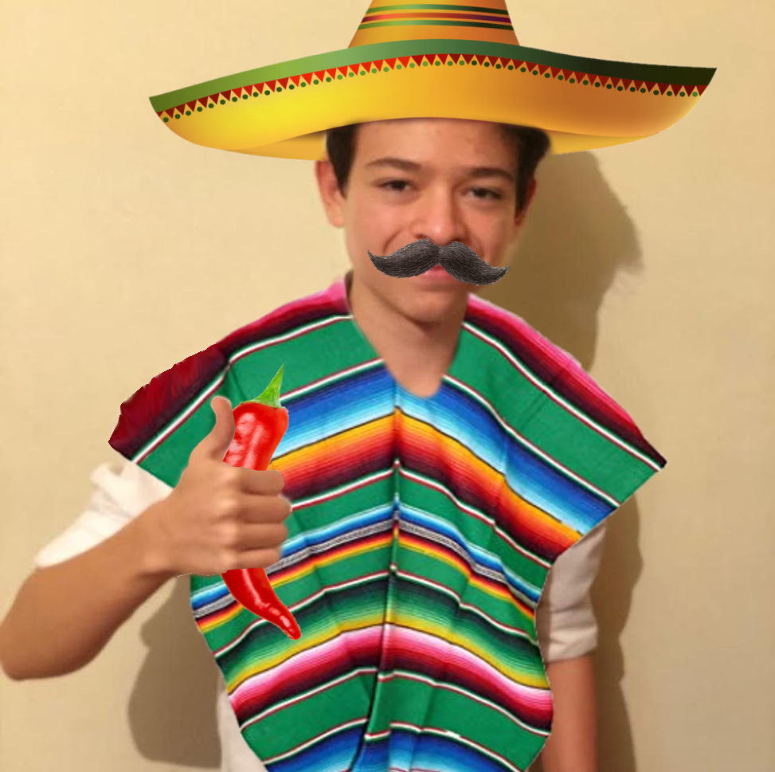
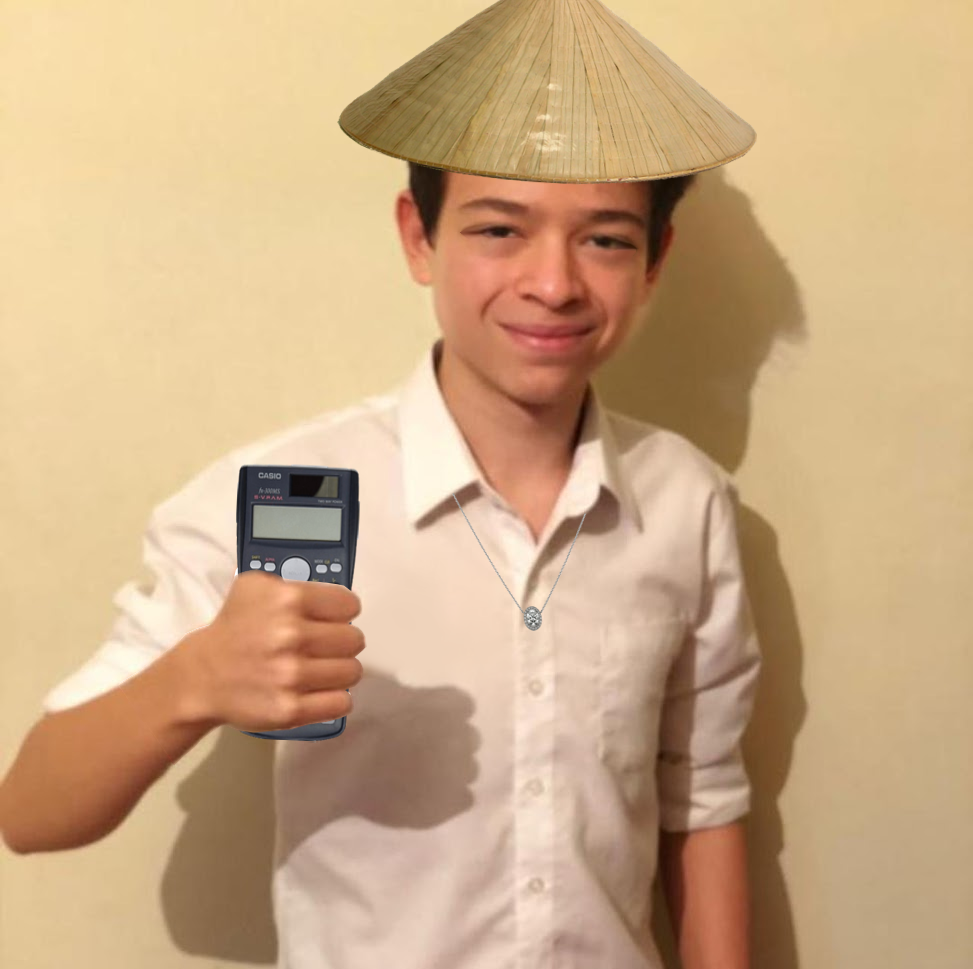
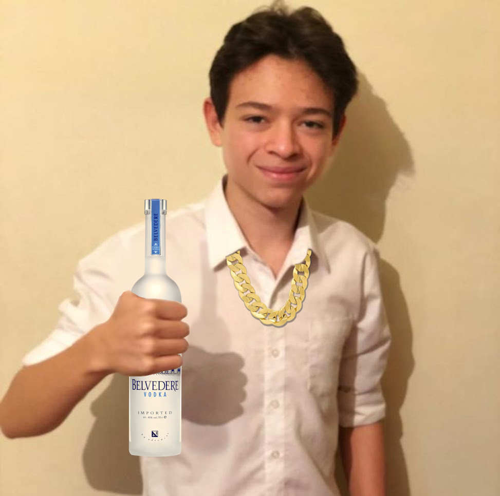
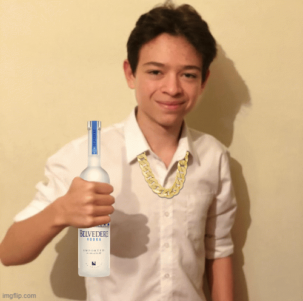
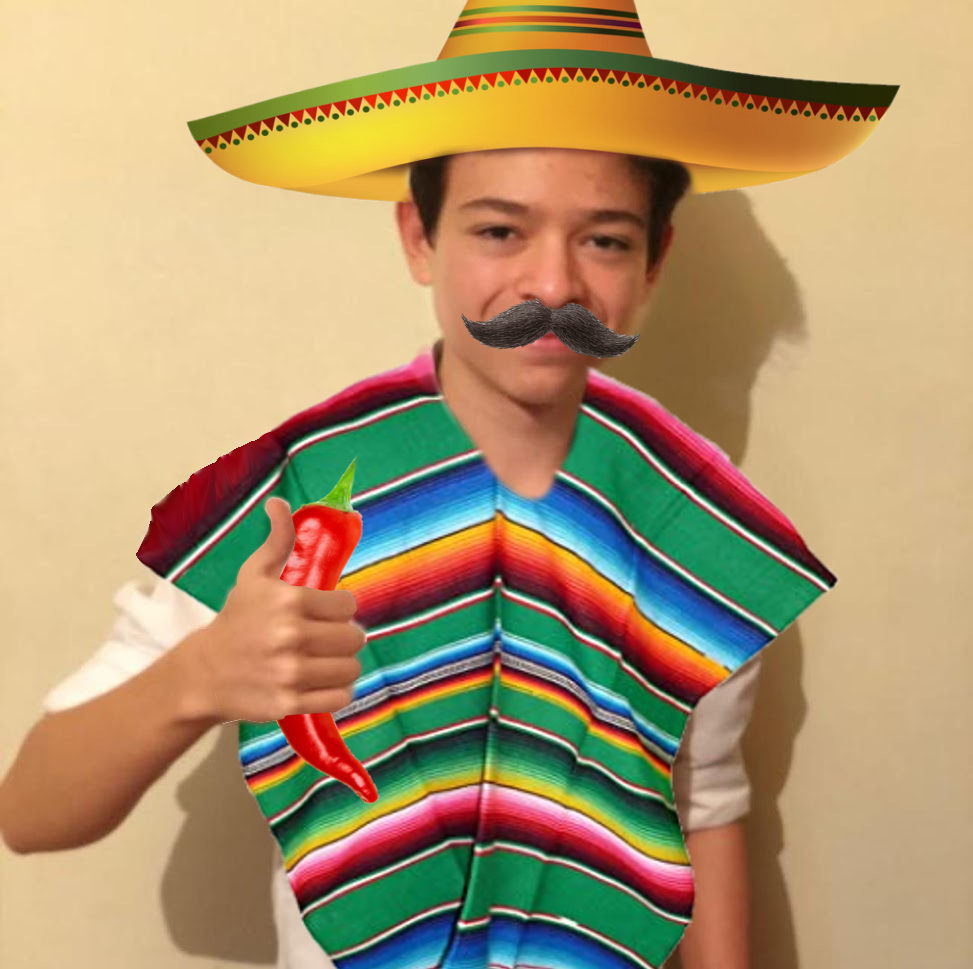
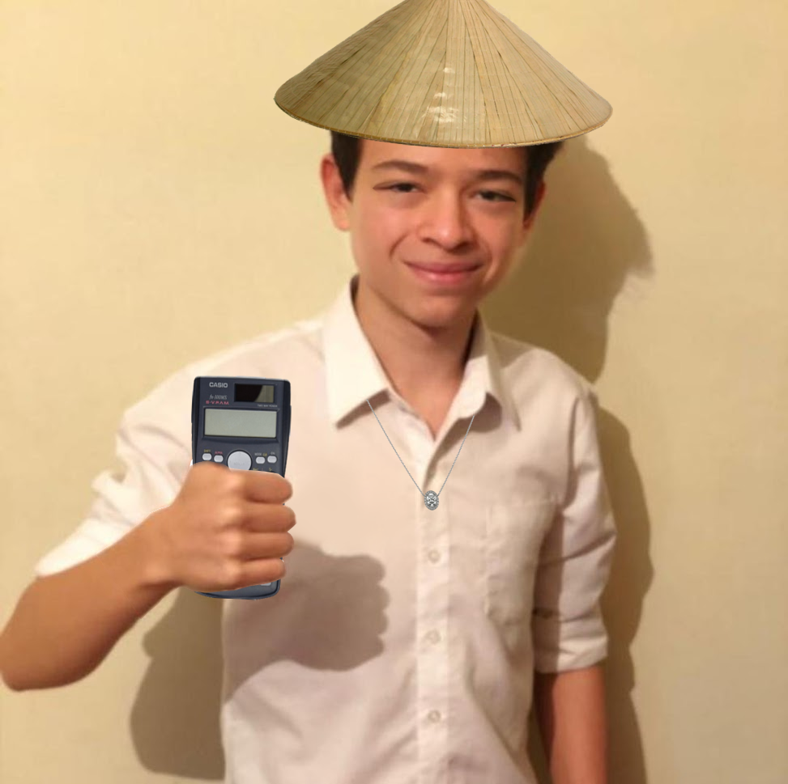
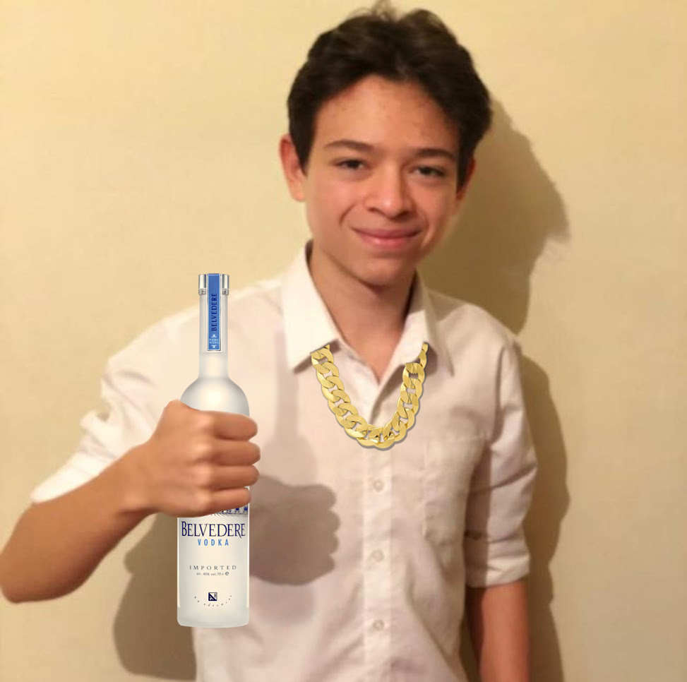
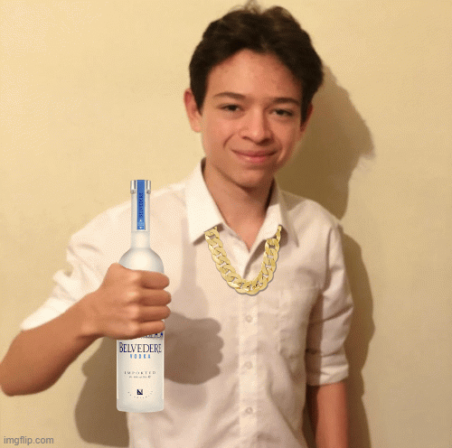

THE FUTURE IS HERE
Cuki is a collection of 20 "Cookie" themed NFTs— these are unique digital collectibles living on the Ethereum blockchain. Cuki NFTs grants acces to members-only benefits, the first of which being a special video of "Cookie". You will be notified when another collection drops.
Each Cuki is unique and generated by hand from over 20 possible traits, including expression, headwear, clothing, and more. All cukis are cool, but some are rarer than others.
When you buy a Cuki, you're not simply buying an avatar or rare piece of art. You are acquiring a membership acces to a community whose benefits and offerings will increase over time. Your Cuki can serve as your digital identity, and open digital doors for you.


 






